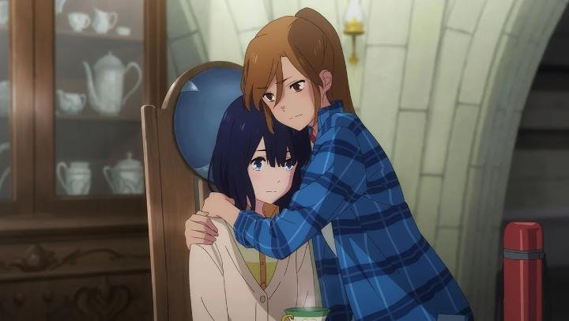

Disclaimer: Minor spoilers.Licensed by GKIDS in North America, the fantasy movie "Lonely Castle in the Mirror" is a 2022 anime film. Unlike other animated movies, I nearly skipped the limited theatrical release, because the marketing seemed so dull. And there might be primary reason for that: the movie's director is Keiichi Hara. He has decades of experience, but his recent films include 2010's "Colorful," 2015's "Miss Hokusai, and 2019's "The Wonderland." I recall appreciating "Colorful" for its subject matter, but all of these movies had an uncanny plain-ness to their direction and art design. Despite the fantastical opportunity of their subject matter, the movies seem surprisingly unambitious. "Lonely Castle" seems to be subject to the worst of this, coming across as "fine" at best, despite some powerful subject matter at its core (thematically, it's closely connected to "Colorful"). Based on a recent Japanese novel, the story starts with Kokoro, a shy pre-teen who doesn't want to attend her new school (her supportive mother allows her to stay home). Alone in the afternoon, she's surprised to see her full-size bedroom mirror glow - stepping inside, she finds a large fantasy castle on a rocky cliff surrounded by water. A little girl in a red dress and a wolf mask welcomes her, and drags her inside to meet six other children, also whisked to this realm. The girl ("Wolf Queen") explains a game is to be played: somewhere in the castle is a key that leads to a hidden room, and the child to find the key wins the chance to make one wish. They all have a full year to search the castle, and are free to return back and forth from the real world as they please. Only a few rules are in place, such as not being in the castle outside 9am - 5pm, or else a monserous wolf would eat them. The movie takes place over the course of the year. There are multiple mysteries at play: who is the wolf-girl? what is the nature of the castle? why were these seven children chosen, and what is their connection? why are they all able to enter the castle during the day, when they should be attending school? what wishes would they each make if they could? All of these mysteries help keep the viewer's curiousity... up to a point. With such a long time-period, the story is fairly casual and lacking in urgency until the second half of the movie, when most of the year has passed and things start to progress. Until then, the first hour of the movie (of an ultimately long story at two hours) feels like watching a bunch of awkward kids walk in to their daycare and finding something to do - quickly giving up on the key without any clues, they spend their time talking, exploring, playing games, and having tea parties. Eventually, answers do come, but be warned that the story is much more interested in the mysteries of the kids and their backstories, rather than the magic castle. At the risk of spoilers, the kids are all depressed due to bullying or other societal pressures from school or family. And it's shockingly harsh bullying too, while not crossing a line (attempted rape is one example). One of the things the story does right is treat the bullying and respective trauma as seriously as it should, while keeping a balance that allows the movie to still be watched by a pre-teen audience. As expected, the friendship they find in each other within the castle makes it a safe space, and they each slowly get the courage to consider attending school again.  As for the castle and finding the key, that too gets answered, although it comes in a climax where the protagonists seem to solve the mystery arbitrarily without any buildup or clues. Which is a great shame, because much of the conclusion feels smart and emotionally powerful, but despite being partially predictable, there are no clues early on to include the viewer on the discovery. It's the sort of thing that a wiser director would have weaved into the early parts of the story for a callback, but it's lacking here, reducing its impact. A minor gripe is that the characters aren't particularly likable - they're all "grounded" and toned-down to feel real. The only exception is the Wolf Queen herself, whose presence allows for mild comedy. She magically appears without warning, and seems the most self-aware, encouraging the kids to take advantage of "being part of fairy tale," and being annoyed to hear they'd rather leave and go home. The hardest part to overlook is the production quality of the movie. It all looks... fine, and on par with one would expect for an anime studio in 2022. But again, everything is toned-down and grounded, including character animation, character design, backgrounds and settings. Which is to say it lacks expressiveness, charm and creativity everywhere. Even the castle itself, which should have been a great design opportunity, feels drab and dull. This is partially appropriate for the slow story (and particularly for the characters, depressed for not being the popular kids in the class), but the whole thing feels like a giant missed opportunity. Music is fine, but subtle and in the background until late in the movie, including a vocal song theme in the credits to punctuate the emotional conclusion. I saw the English dub, and to its credit, the main cast all sound authentically like children. The problem with this is that it sounds like untrained child actors, with awkward deliveries that aren't pleasing to listen to, resulting in an unusually bad dub. It hurts to be so luke-warm on "Lonely Castle in the Mirror," because there are some strong and emotional elements to the story, and its themes are important for modern and young-adult audiences. I'd recommend checking out the novel. But the movie barely works well enough to justify. It's director might have been the smart choice given his past work, but a lot of the problems just go with his typical style, which might be too subdued and boring for animation.
- "Ani" More reviews can be found at : https://2danicritic.github.io/ Previous review: review_Liz_and_the_Blue_Bird Next review: review_Long_Way_North